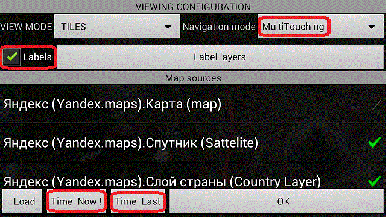
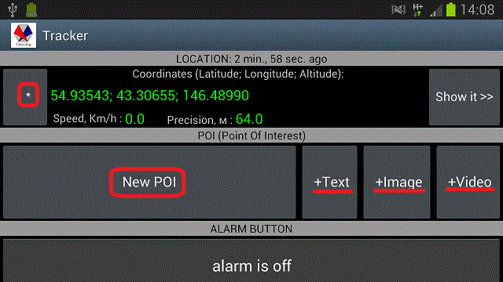
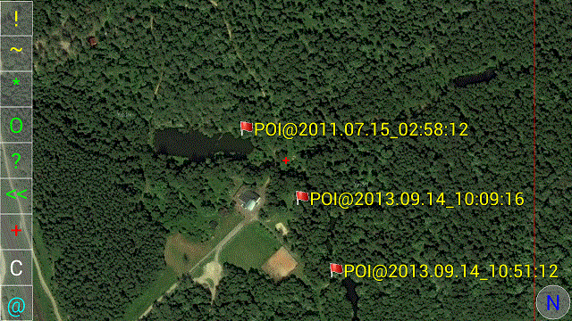
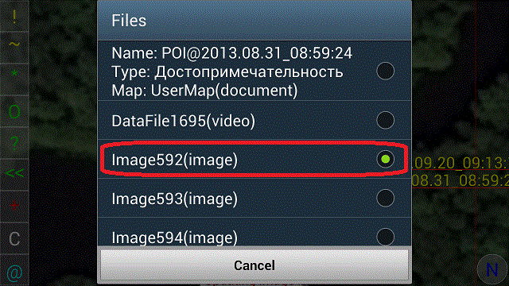
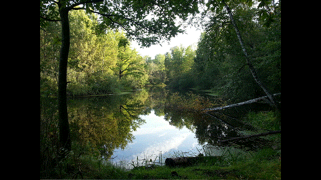
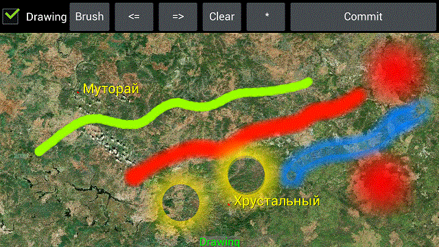
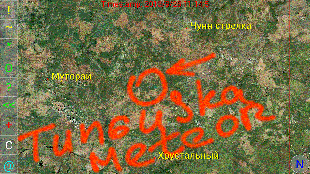
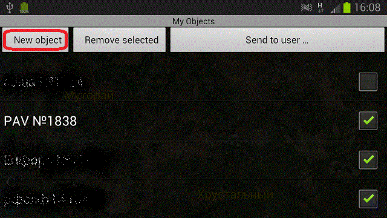
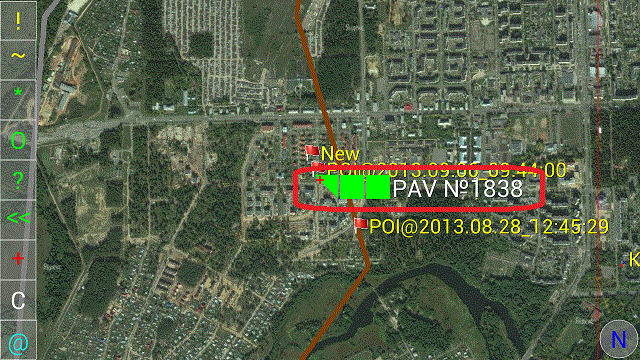
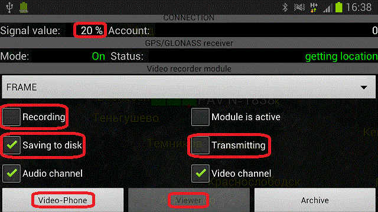

Geo.Log program help
Main program window shows a map depending on visualization settings. These settings allow to combine various map sources, raster or vectorized.

There
are two areas on the window:
1. Right area – area of navigation. In the “default” navigation mode that area contains two red vertical lines. Zone between first and second lines is for scaling. Zone next to second line is for rotating. Zone prior to the first line – for moving. In an “arrow” navigation mode area contains buttons with arrows for the appropriate actions.
2. Left area – area of control buttons:
“!” - update button. This button causes window to be refreshed immediately.
“~” - viewing configuration button opens a dialog screen with viewing settings.
“*” - “my places” button opens screen with the list of locations that bookmarked by the user.
“O” - “my objects” button opens screen with the list of mobile objects that bookmarked by the user.
“?” - search button opens a screen that allows to search map objects by name context.
“<<” - “go back” button to go to the last visited location.
“+” - “editor” button opens in-place map editor. User can draw inscriptions/drawings on the map.
“U” - “user” button opens screen for user searching.
“@” - “tracker” button opens the screen with tracker parameters such as current state, GPS position, speed etc. That screen contains some control elements (“Alarm button”, “POI button” etc).
“N” - “North” button aligns screen to the North Pole.
Viewing configuration.
To configure map view click “~” button. A settings screen appears.

There
are following basic elements there:
“Navigation mode” - user can select navigation model.
“Labels” - user can switch on/off the embedded labels on map.
“Map sources” - a map list the user can use for selecting layer's set from . A «Load» button is for loading map list from the server.
“Time: Now!” - go to current time for map viewing.
“Time: Last” - opens a screen to select last time for viewing the map in history.
Basic operations
1. Creating a POI on the map(point of interest) .
To create a POI click the tracker button “@”. Following screen should appear.

It is requirement that GPS position receiver should be ON in system settings and current position is available. If you see that location data is obsolete so it could be updated forcibly by pressing a button “*”. Next, press a «New POI» button, enter POI name and press “Create” button. Next step, the user can attach any data files regarding that POI such as Texts, Images, Video-clips. The project supports Full HD video-clips with sizes up to 512 Mb. As new POI is created it appears on the map like following:

If the user clicks on the POI a property panel should appear with list of POI attachments.

Clicking on image attachment user can see a location image.

2. User Drawing on the map.
To draw something on the map user should click button “+”. A Graphic editor appears:

Draw by finger or stylus. Styles of the brush or its color may be selected by menu button. As drawing process is finished press “Commit” button. Commit screen appears. Enter a “drawing” name and check appropriate options. Option “Reset image after commit” is intended for drawing's lifetime support. If it is checked the drawings will be cleared after saving. A link to the drawing with its time-stamp goes into “My places” list of the main map screen so that the user will be able to see its drawing via “My places” . Also that list contains an ability to send user drawings to another user(s) of the project. If option “Reset image after commit” is unchecked the program provides the user with list of drawing lifetimes – day, week, month. User can select one, the drawing will be cleared after that time but accessible through the history and “My places” list.

3. Monitoring a mobile object.
To monitor a mobile object the user should add an object entry into “My objects” list. That list appears by clicking “O” button of the main map screen.

The map below shows checked items of the list “My objects” .

Clicking the object marker an object's property panel appears. That panel shows parameters such as cellular signal value, GPS receiver status etc. Also the panel contains some control elements regarding multimedia data. Using these elements user can start audio/video stream transmission from remote object (Set audio: ON, video: ON, transmitting: ON, and finally recording: ON. Start enabled “Viewer” button). Also the user can initiate an audio/video communication to a remote object user (button “Video-Phone”).

* These operations are allowed for registered users only. Register at the “Configuration” screen.
© 2013 geo-log.googlecode.com